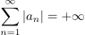
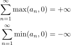
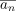
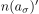
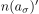

Riemannscher Umordnungssatz
1. Satz
Sei  eine Reihe, welche konvergiert, aber nicht absolut.
Dann folgt, dass diese Reihe bedingt konvergiert
eine Reihe, welche konvergiert, aber nicht absolut.
Dann folgt, dass diese Reihe bedingt konvergiert
2. Beweis
Da nicht absolut konvergiert, folgt:

1
Zudem gilt, dass die Teilfolgen bestehend aus den positiven und negativen summanden bestimmte Divergieren müssen, weil es sonst ein Widerspruch zur Konvergenz wäre.

2
Sei  die Teilfolge negativer zahlen und  die Teilfolge nichtnegativer Zahlen, $ {n(aσ)}}$ bzw.  eine Abbildung, welche auf das nächste, noch unverwendete Folgenglied von $ n$ bzw. abbildet und sei
die Teilfolge nichtnegativer Zahlen, $ {n(aσ)}}$ bzw.  eine Abbildung, welche auf das nächste, noch unverwendete Folgenglied von $ n$ bzw. abbildet und sei  ein beliebiger Grenzwert
dann konstruiere man die Umordnung folgendermaßen
ein beliebiger Grenzwert
dann konstruiere man die Umordnung folgendermaßen
 3
3
Ebenso lässt sich eine Umordnung konstruieren, welche bestimmt divergiert: